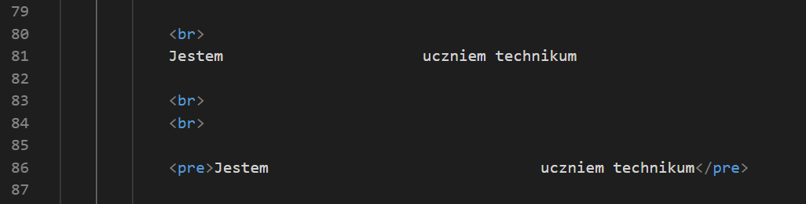

Najpierw trochę teorii...
Znacznik pre służy do interpretacji znaków białych w kodzie HTML
Są to spacje, tabulatory i znak do końca linii
Spójrzmy na przykład poniżej

Efekt:
--------------------------------------------------------------------------------------
Jestem uczniem technikum
Jestem uczniem technikum
--------------------------------------------------------------------------------------
Jak widzimy bez znacznika "pre" przeglądarka interpretując kod usuwa domyślnie kilkadziesiąt spacji
zostawiając tylko jedną.
Atrybuty znacznika